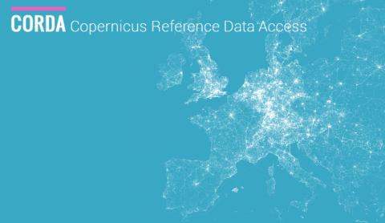
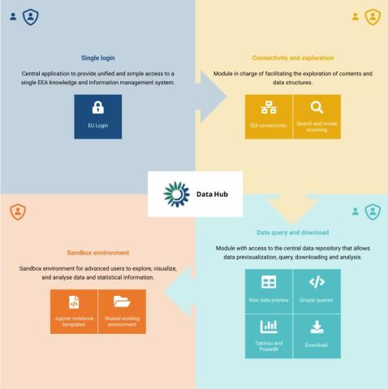
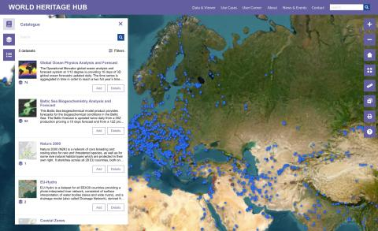
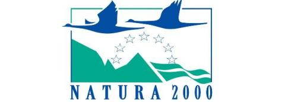
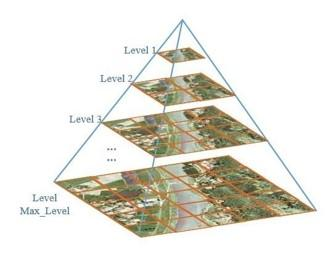
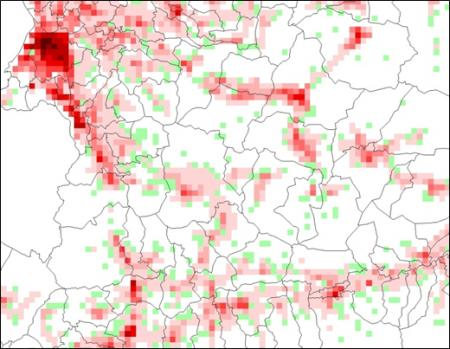
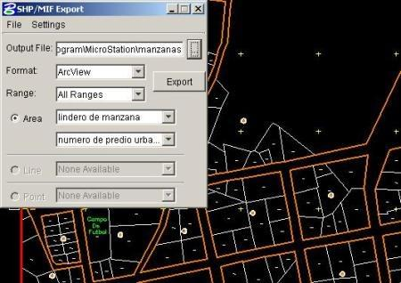
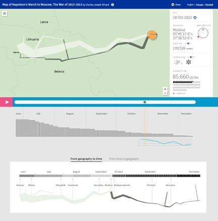
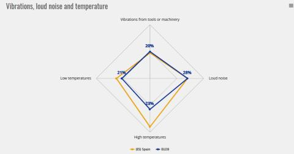

2014–nowCORDA
Copernicus Reference Data Access
Single entry point to national and regional reference data for Copernicus services, with quality control and harmonised datasets.
Data Platform & Data Governance Lead · EU Project Manager
I build the data infrastructure European institutions rely on: data hubs, data lakehouses and governed dataflows. I also guide them through the key technology decisions behind it. Clean, well-described data first, so analytics and AI can be trusted. Grounded in 20+ years of software engineering.
Delivering data platforms for
My role sits where architecture, governance and the client meet: designing the components a modern data platform needs, guiding the institution's technology choices, and making sure the data is clean enough for AI to act on.
DataHubs and Data Lakehouses: object storage, columnar formats, query engines, catalogues and APIs, built on open standards and decoupled interfaces, so any component can be replaced.
Ownership with data custodians and stewards, metadata and catalogues, quality control and lineage, turning manual processes into governed, auditable dataflows.
Studies, benchmarks and proofs of concept that let the client decide with evidence, such as choosing the next query engine for a lakehouse. Then a roadmap the team can deliver.
Clean, documented data so AI makes sound decisions, plus AI tools on top of the lakehouse: metadata assistants, data discovery and analytics over structured and unstructured sources.
The layers I design and deliver with my teams, and the technologies we have run in production. Governance is not a layer on top: it runs through every one of them.
A selection of the platforms and tools my teams have built. Swipe, drag or use the arrows.

2014–nowCopernicus Reference Data Access
Single entry point to national and regional reference data for Copernicus services, with quality control and harmonised datasets.

2022–nowData platform & Lakehouse
High-performance analytics, bespoke queries and downloads on S3, Parquet, Dremio and Databricks.

2024–nowData Viewer
Monitoring World Heritage sites with harmonised Copernicus, UNESCO, Natura 2000 and EMODnet data.

2021–nowDataflow backbone
From manual operations to a governed, dataflow-driven system for Europe's Natura 2000 network.

2018–nowJoint Environmental Data Integration
Grid processing for environmental accounts and statistics, explored with AI and published through BI.

2018–2019Spatial Data Infrastructure
Development, maintenance and operations of Eurostat's Spatial Data Infrastructure software.

2011–2014Cadastre & property tax
Modernisation of the whole cadastre and property-tax process for ~1,400 government users.

2017–2019Interactive visualisation
Making EU legislative procedures readable through interactive visualisation.

2017–2018Data visualisation tool
Interactive tool for the European Parliament study on safety and health of an ageing workforce.
Project Manager & Advanced Data Analytics team leader at Bilbomática (an Altia company) since 2018, after Senior Functional Analyst (2014–2017) and seven years of GIS development at Tracasa.
Development, maintenance and operations of Spatial Data Infrastructure software.
INSPIRE Reference Validator: evolutionary maintenance and helpdesk.
Interactive visualisation of EU law procedures on EUR-Lex.
Data visualisation tool for the European Parliament study on an ageing workforce.
Administrative and technical modernisation of the Cadastre and Property Tax for the Federal District Government (Tracasa, 2011–2014). Property Management and Updating Information System covering the whole cadastre–tax process, with a multidisciplinary team of technical and business consultants.
Custom GIS processing engines and tools (tcEngine, Geobide), SolarGIS and photogrammetric file management.
Public-sector IT and data projects for Bizkaia through Lantik.
Working from Bilbao for institutions headquartered across Europe, with on-site missions in Copenhagen and an international project in Mexico City.
I started writing geoprocessing engines and cadastral systems. That engineering base is why my architecture recommendations are grounded in what can actually be built and run.
Tracasa · geoprocessing engines for the Government of Navarre.
Tracasa · cadastre & tax system for Mexico City (~1,400 users), SolarGIS; EEA intramural missions.
Bilbomática · data visualisation and SDI for EU agencies.
Bilbomática (Altia) · leading Advanced Data Analytics teams for EU institutions.
Data platforms, governance or AI on public-sector data? Always happy to compare notes.